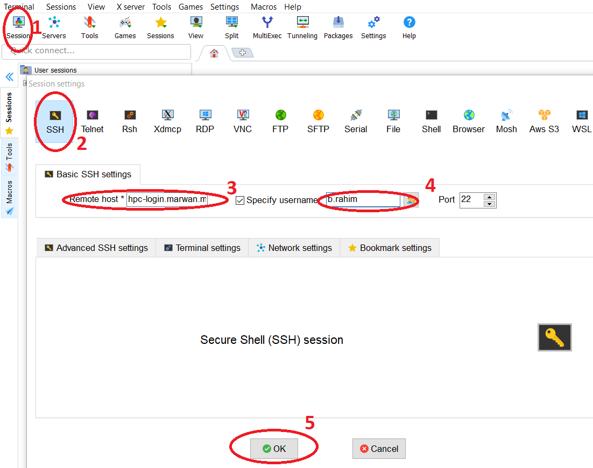
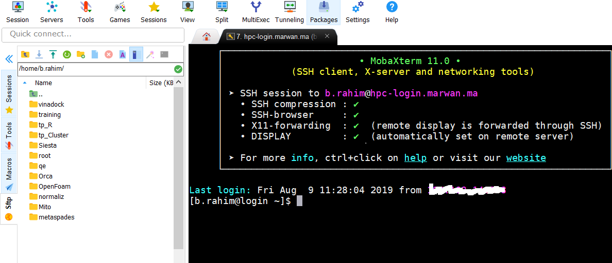

Accès à l’HPC via Windows
Installer un client ssh ( Mobaxterm ou Putty ) et un client scp (Winscp, Filezilla, Mobaxterm) pour le transfert des fichiers
Hint
- Paramètres de connexion:
Username : username (remplacer <username> par votre login )
Remote host: hpc-login.marwan.ma
Port : 22
Acces ssh avec MobaXterm
 Transfert de fichiers (scp) avec Mobaxterm :
Transfert de fichiers/dossiers de la machine de l’utilisateur vers le dossier personnel sur HPC
Transfert de fichiers/dossiers du dossier personnel sur HPC vers la machine de l’utilisateur
Changement de dossier courant (taper /data/<username>pour accéder au dossier de données et effectuer les transferts)